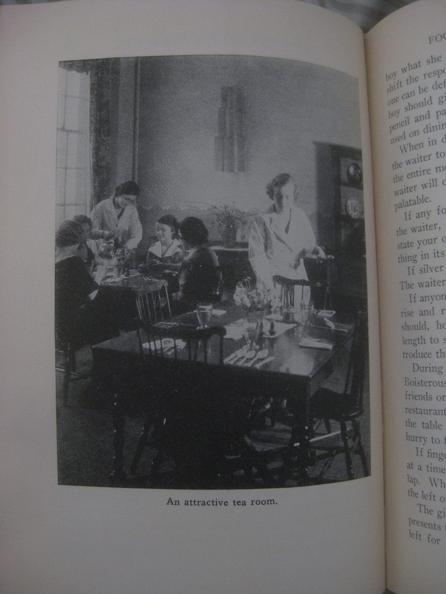
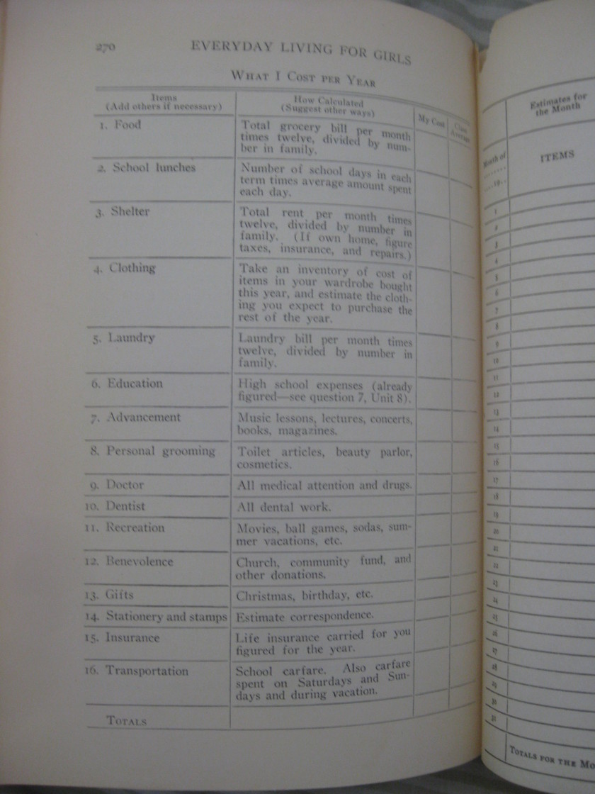
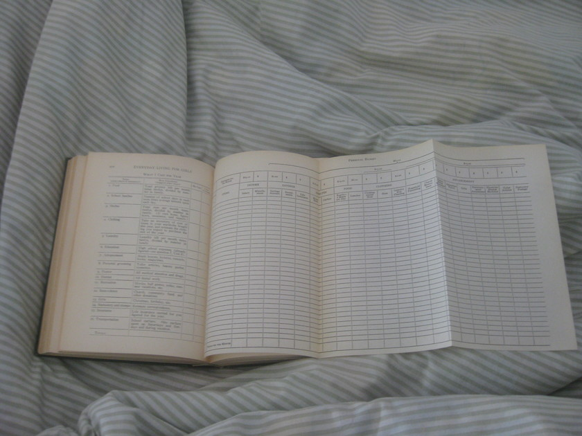
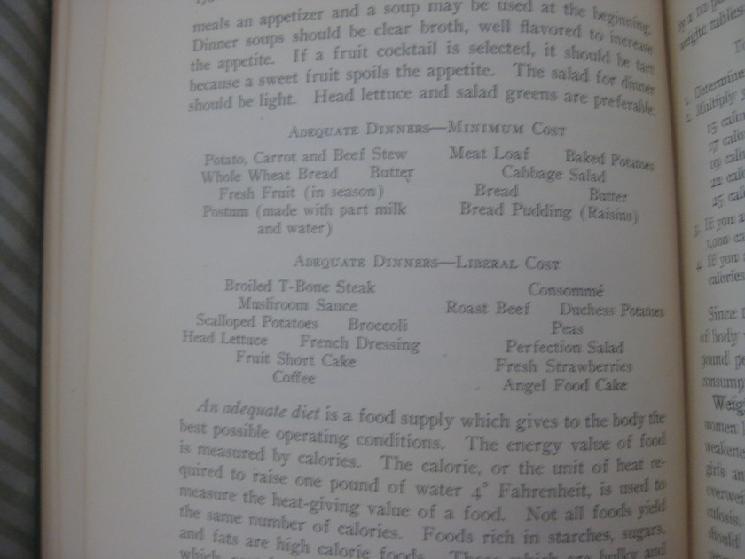
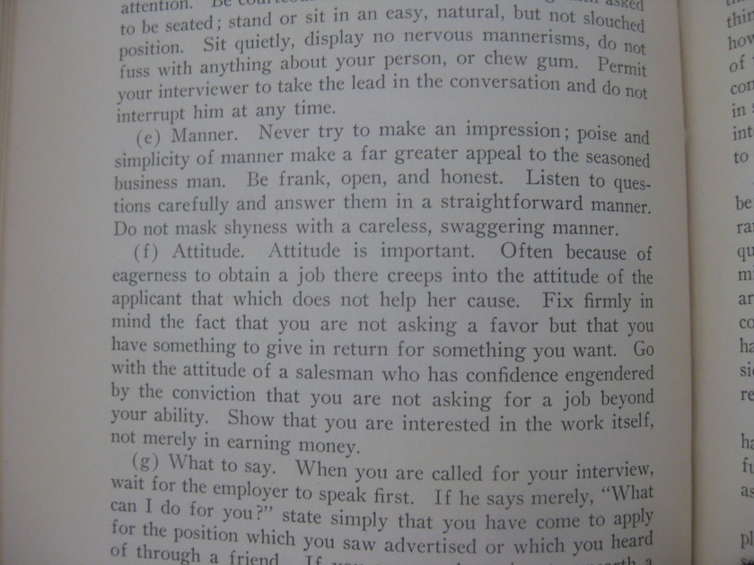
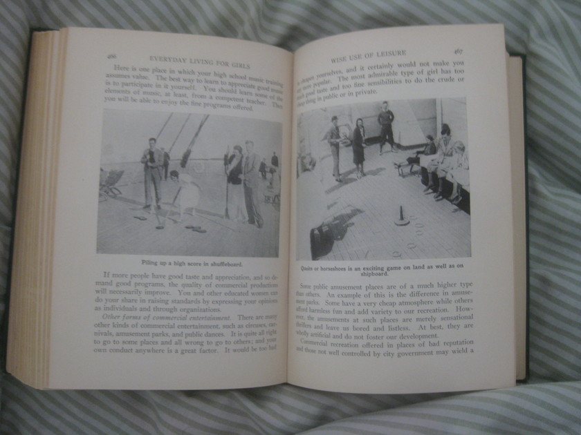
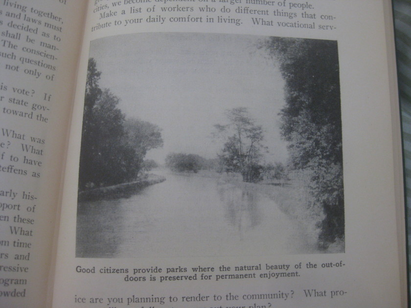
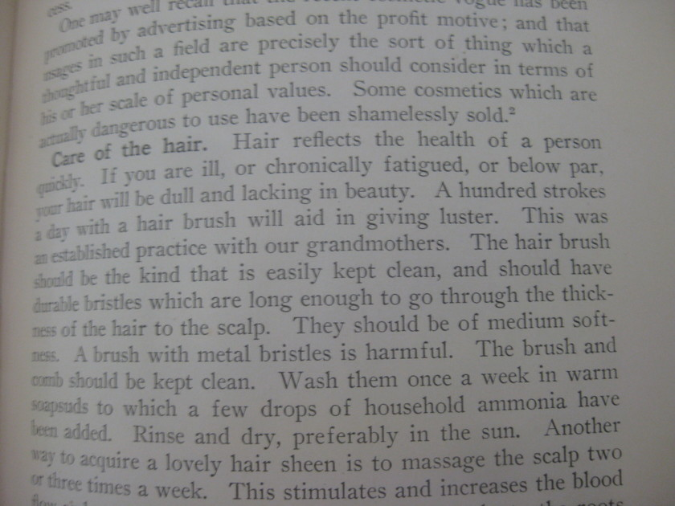
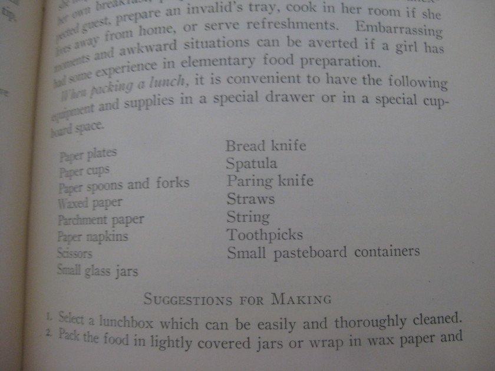
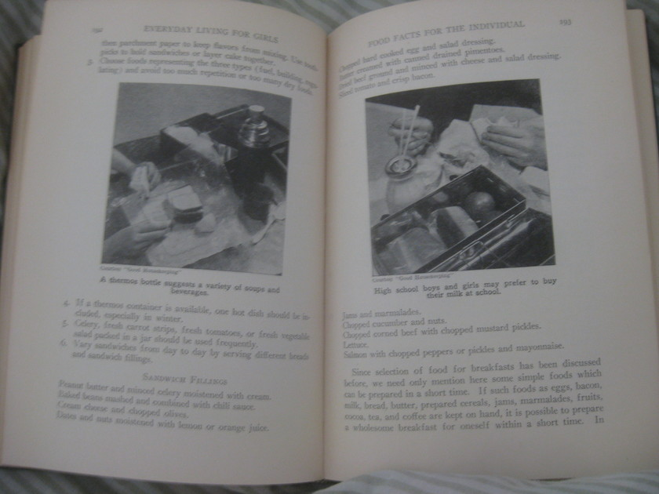

Everyday Living for Girls
The purpose of this book is to develop standards of living and appreciations of the value of personal and social development in the high school girl (page v)
Everyday Living for Girls, by is a gem that I found in the library at university.
It has 14 units, which include “Planning Clothes Artistically”, “Selecting Clothes Practically”, “Supervising One’s Wardrobe”, “Food Facts for the Individual” and “Making the Most of Oneself: Manners and Conventions”. And the table of contents is in small caps! (I find small caps quite interesting.)
Here are some of my favorite excepts, divided by section of the book.
Health an Asset
We usually form a high estimate of the person who stands and walks erect. Mental characteristics of alertness, decision, and courage are indications of good health and reflect themselves in good posture. (page 153)
[I]n most cases the deformity is brought about by lack of thought of our posture when engaged in daily activities. Continued poor occupational posture will eventually take a permanent toll in a warped body whose general health will be impaired by the improper functioning of the body organs thus thrown into a cramped position’’ (page 154)
Food Facts for the Individual
Eating downtown
A girl with a minimum wage should never select a tearoom where a tea-leaf reader tells fortunes. In the first place, the food may be expensive and inferior. One must pay for “fortunes” that are silly nonsense and sacrifice food values essential for health (page 182)
Ordering a balanced meal from a menu card is much different from selecting a meal in your school lunchroom or planning a meal for the family. Frequently, odd terms or French words are used. To be able to order a meal without embarrassment one should know the meaning of these terms. A menu card may seem very formidable to an inexperienced person (page 183)
The authors then go on to discuss the difference between “table d’hôte” and “à la carte” and to include example menus (pages 184–5).
{kind=link}
An “Explanation of Unusual Terms Used on Meal Cards” is presented on pages 186–7. They like talking about “fat” in this explanation. For example, “[c]roquette” is described as “Potatoes, fish, or vegetables formed into cones or patties and fried in deep fat.” (page 186)
{kind=link}
Dining in public places
Bad table manners indicate lack of background. Eating is not at any time an attractive process. Each individual should have too much personal pride to risk offending others by boorish manners. (page 187)
When dining in a restaurant or a hotel, wait at the entrance for the head waiter to escort you to a seat. If a boy and a girl are together, the girl follows the waiter to a table. If there is no waiter, then the boy should lead the way, find a table, and assist the girl to her seat. He should also help her remove her wrap after he is seated and arrange it over the back of the chair. The girl should place her gloves and purse in her lap or on a vacant chair, if there is one. Never place purse or gloves on the tablecloth. If the hat is to be removed, this should be done outside the dining-room. No attention should be given to the hair at the table. Removing the hat, arranging the hair, and applying lipstick and other make-up should take place in the dressing room. To do any of them at the table is a mark of poor breeding (page 187)
Page 188 has a picture of “An attractive tea room.”

Page 189 is hilarious.
{kind=link}
If silver should be dropped on the floor, do not pick it up. The waiter will bring you another piece.’’ (page 189)
If anyone stops at the table to speak with you, the boy should rise and remain standing while the person is present. (page 189)
During the meal, conversation should be quiet and dignified. Boisterous laughter, lounging over the table, beckoning to friends or acquaintances are all signs of poor breeding. (page 189)
When two girls are dining together, each may order her own meal. When paying for the meal, they may ask for separate checks; if one check is given, they may settle between themselves. At no time should an argument arise as to who shall pay the bill. This attracts attention and is in poor taste. Each girl may leave a tip, or one may pay the entire bill and the tip, allowing the other person to pay her later. (page 190)
Entering the Business World
This section discusses, among other things, the merits a college education for a girl. It encourages such an education from a financial perspective.
Personal and Social Development
Petting
One of the questions that arises between boys and girls is that of petting. It is agreed that public demonstration of affection is always in bad taste and the wisdom of that done in secret is always to be questioned. (page 386)
Reference
Here’s the reference, in , so you can find the book.
@book{vanduzer,
title={Everyday Living for Girls: A Textbook in Personal Regimen},
author={Adelaide Laura van Duzer and Edna M. Andrix and Ethelwyn L. Bobenmyer and E. Maude Hawkins and Mary E. Hemmersbaugh and Elsa P. Page},
editor={Benjamin R. Andrews},
publisher={J. B. Lippincott Company},
address={Chicago},
year=1936
}
Yet-to-be-transcribed
Here are some other awesome pages for which I have pictures but no transcription.
        